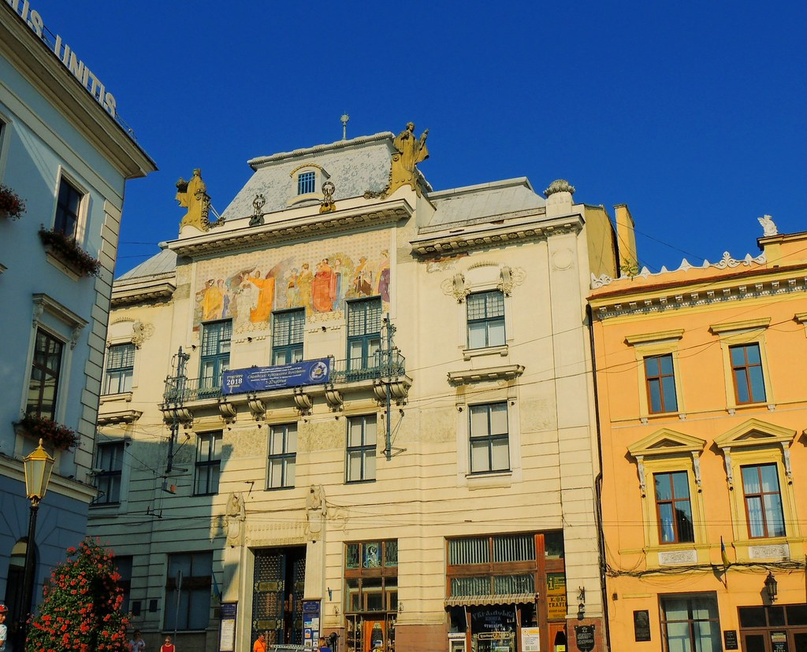
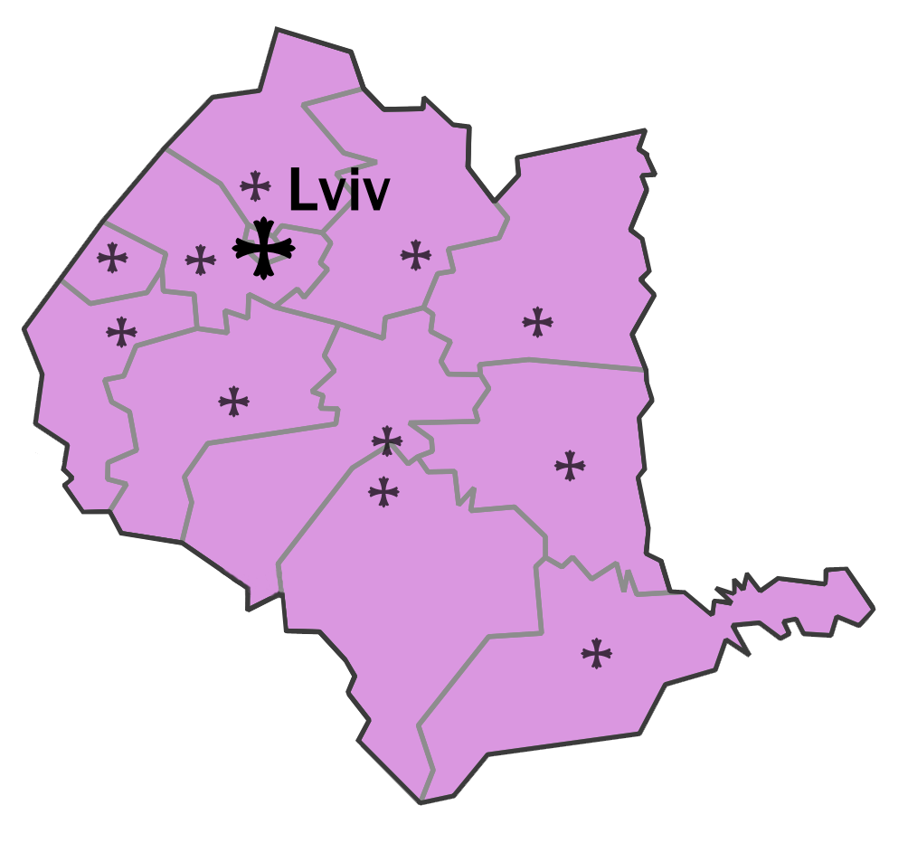
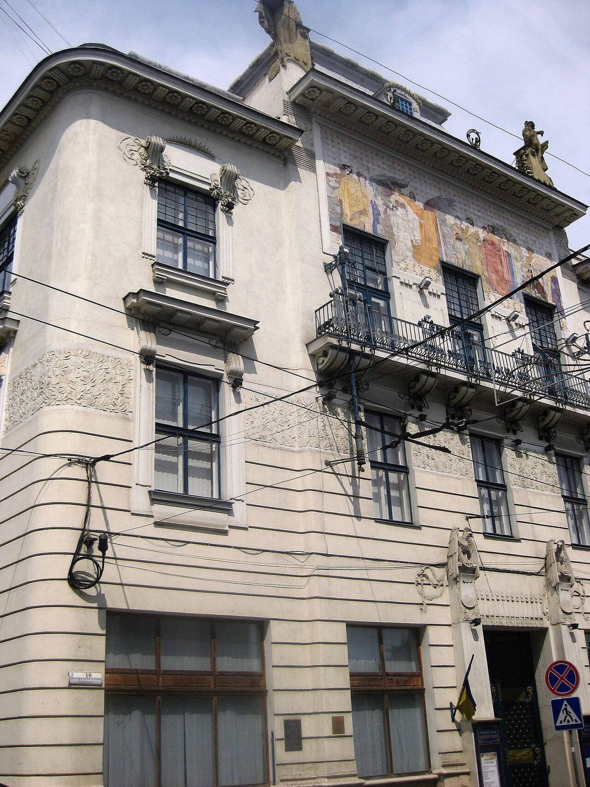
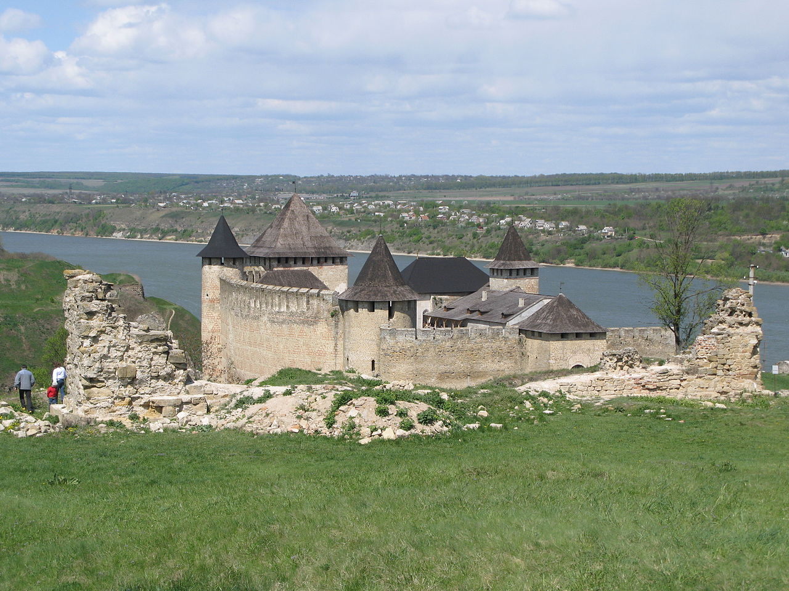
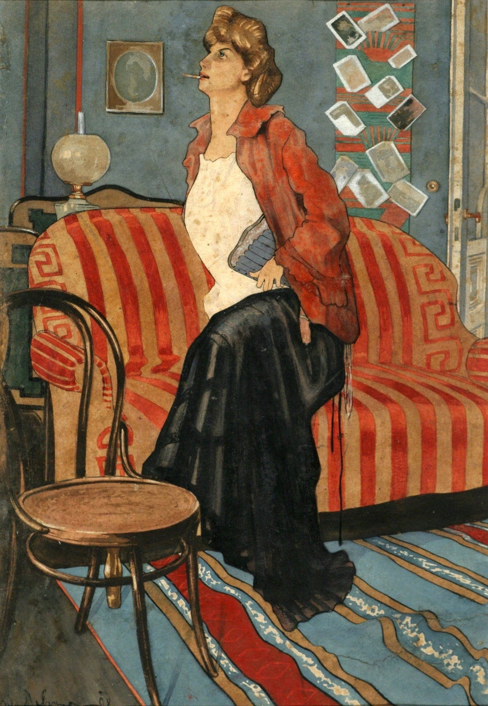
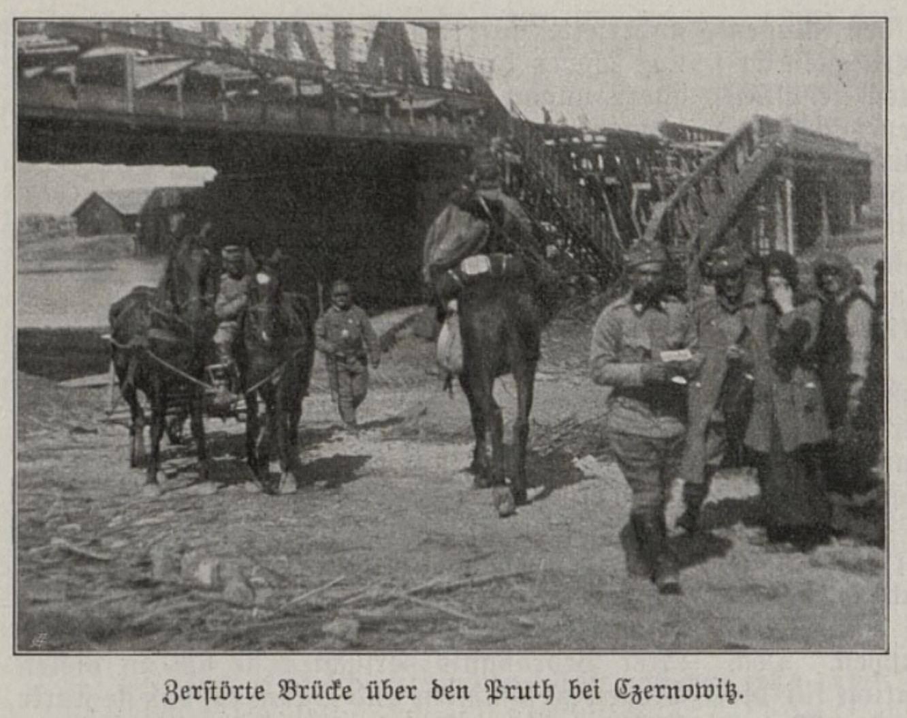
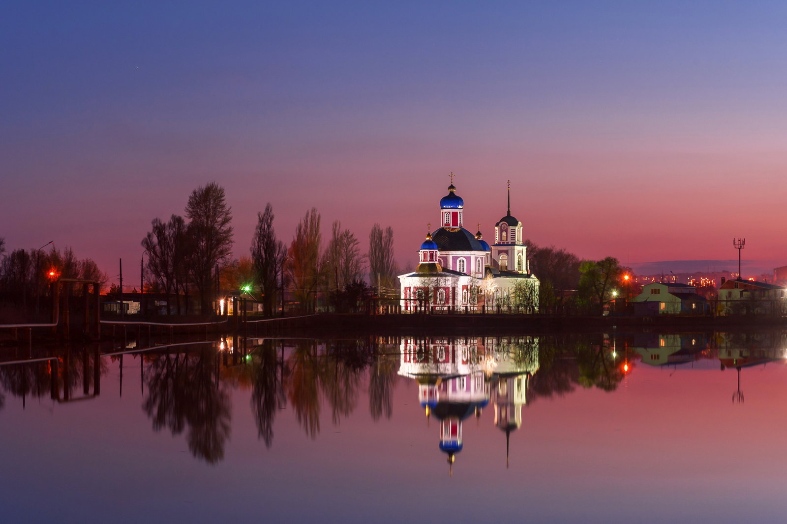
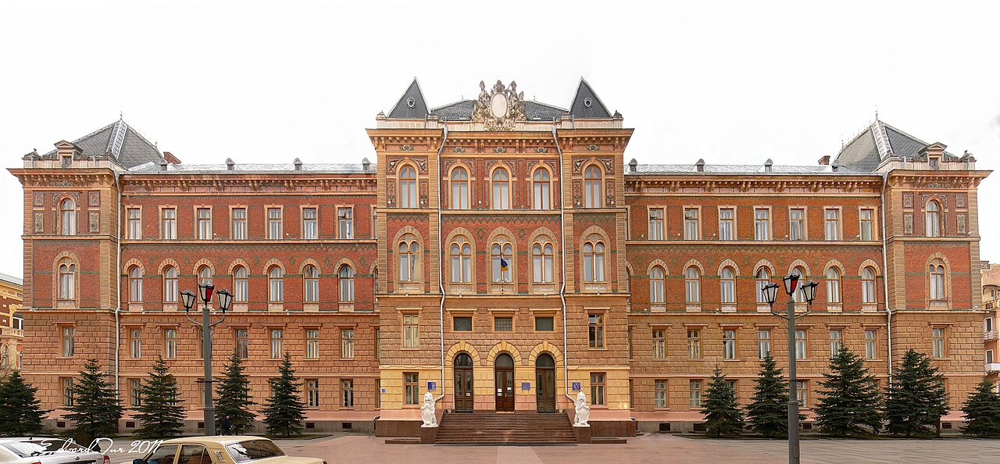
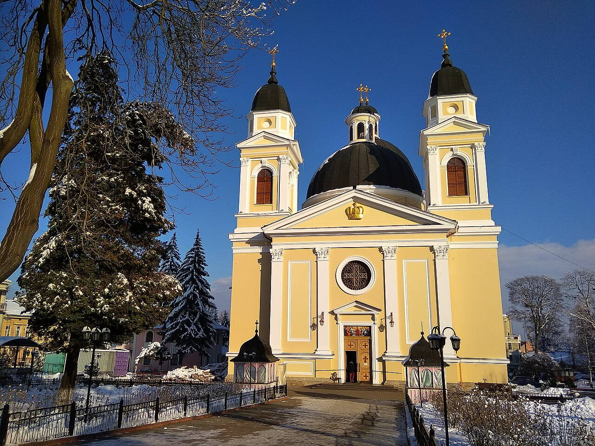

Исторические и справочные гербы


Chernivtsi
Путеводитель. Объектов в этом выпуске: 34.
OTIUM — практика нарочитого досуга. В античном смысле otium — не побег от работы, а время, когда внимание возвращается к памяти, пейзажу и мысли — без прикладного дедлайна.
Мы выстраиваем маршруты для неспешного присутствия, а не для чек-листа достопримечательностей: важно быть в месте, а не «потреблять» виды.
OTIUM — не туроператор. Это приглашение пройтись, остановиться и оставить маршрут незавершённым, если свет на фасаде заслуживает ещё минуты.
Исторические и справочные гербы
Путеводитель. Объектов в этом выпуске: 34.
Черновцы — административный центр Черновицкой области Украины, город на перекрёстке культур восточной Европы.
В составе Австро-Венгрии получил университетский кампус и многоэтничную застройку; исторический центр отражает влияние румынского, украинского, еврейского и немецкого наследия. Сегодня Черновцы — региональный узел образования и туризма.
Межвоенный период и Вторая мировая сменили государственные границы; советский и постсоветский этапы укрепили университет и театр. Сегодня Черновцы подчёркивают культурное многообразие Буковины и роль образования на западе Украины.




Румынский православный собор Святого Духа (1844) расположен на месте бывшего румынского национального дома в центре Черновцов, имеет неоклассический фасад и богато украшенный интерьер.


Тсентральна Площадь (Центральная Площадь) — историческое сердце Черновцов, обрамленное зданием ратуши, подъездами университета и оживленными пешеходными маршрутами по старому городу.


В центре оживленного центра города Черновцы находится его исторический железнодорожный вокзал — символ богатого культурного наследия и транспортный узел города с конца XIX века. Открыт в 1874 году во время правления императора Франца Иосифа I. Обладает замысловатыми декоративными элементами, характерными для неоренессанского стиля. Выступает в качестве ключевого сообщения между Украиной и соседними странами, такими как Румыния и Молдова. В этом городе есть небольшой музей, посвященный местной истории и железнодорожному транспорту. Проводил значительные политические собрания и события на протяжении всей своей истории.
Построенная в 1874 году, железнодорожная станция Черновцы играла ключевую роль в развитии региона как крупный транзитный узел для пассажиров и товаров. Её неоренессанская архитектура отражает эпоху, когда город входил в состав Австро-Венгерской империи, демонстрируя богато украшенные фасады и элегантные интерьеры, сочетающие классические и восточноевропейские элементы дизайна. Посетители могут оценить историческое значение вокзала, наслаждаясь при этом современными удобствами, такими как комфортные зоны ожидания и кафе.














Следующие соборы, церкви и часовни посвящены Святому Николаю: Церковь Святого Николая в Албании, Церковь Святого Николая в Курджане, Церковь Святого Николая в Москополе.



